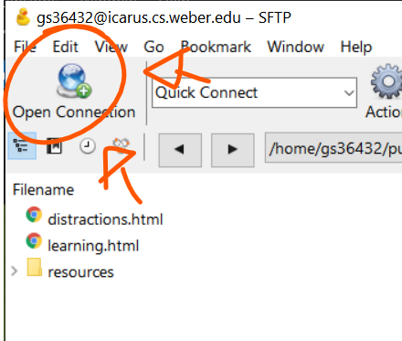
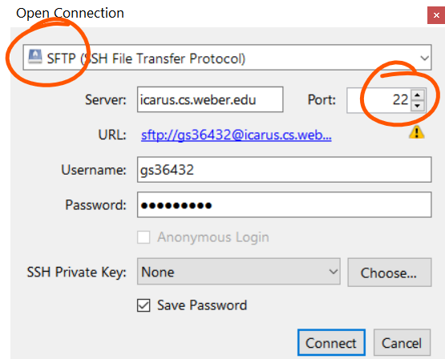
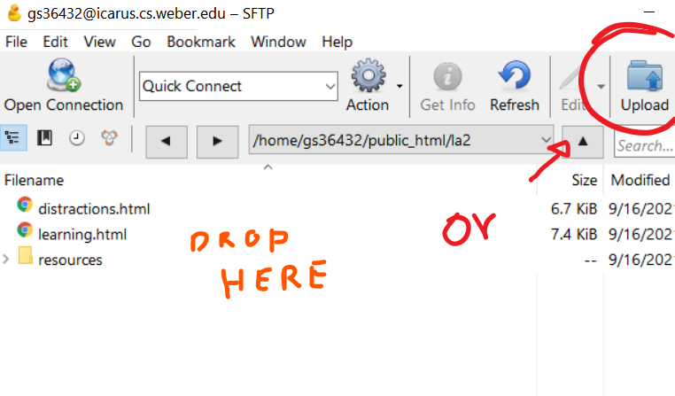
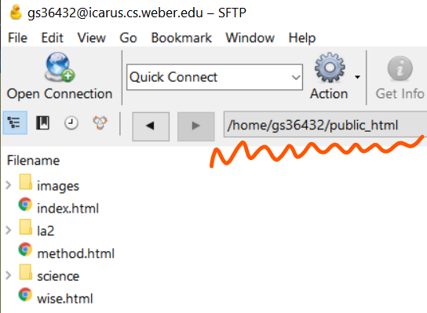
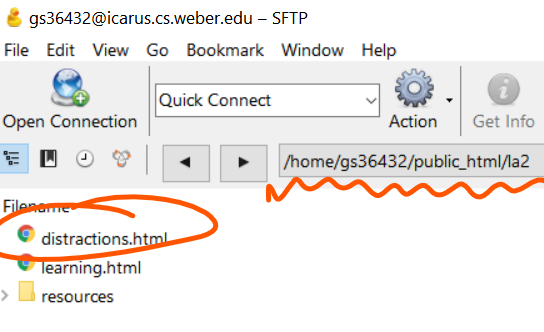
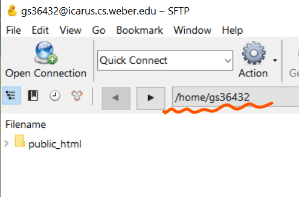

How to Publish a Web Page On Icarus
Introduction
Icarus is a Weber State University server that is accessible through a number of steps. This tutorial will explain how to connect to the server and upload the necessary files.
FTP: Cyberduck
In order to upload files to the Icarus server, you will need to establish a SSH connection using a program like PuTTY. Once connected you will also need to download a FTP tool. In this tutorial we will be using Cyberduck.
Oppening a Connection
When first opening the Cyberduck software a window should appear and the first thing you are going to want to click is "Open Connection"."
Connection Information
Once that is clicked, another window will pop up. This is where you will input your information like the server name, your username, password, etc.
Make sure to switch to a SFTP type protocol and a Port of 22. The server name is: icarus.cs.weber.edu or 137.190.19.20. Your Username will be your initials and the last five digits of your W number. The password will be your first name (capitalized) and "cs!" at the end
Example
Name: Billy Bob
W#: W01234567
Username: bb34567
Password: Billycs!
Uploading Files
Once connected you are able to upload a file, or multiple files into the Icarus public.html folder by looking for the "Upload" button on the top bar. Or you can simply drag and drop a file.
Composing a URL
In order to access the website you uploaded you will need to know how to write the URL. Here are three different examples for three different paths.
1. Directly in public_html Folder
Example URL:
icarus.cs.weber.edu/~gs36432/public_html
2. Secondary folder
Example URL:
icarus.cs.weber.edu/~gs36432/public_html/la2/distractions.html
3. No file name in URL
Example URL:
icarus.cs.weber.edu/~gs36432
